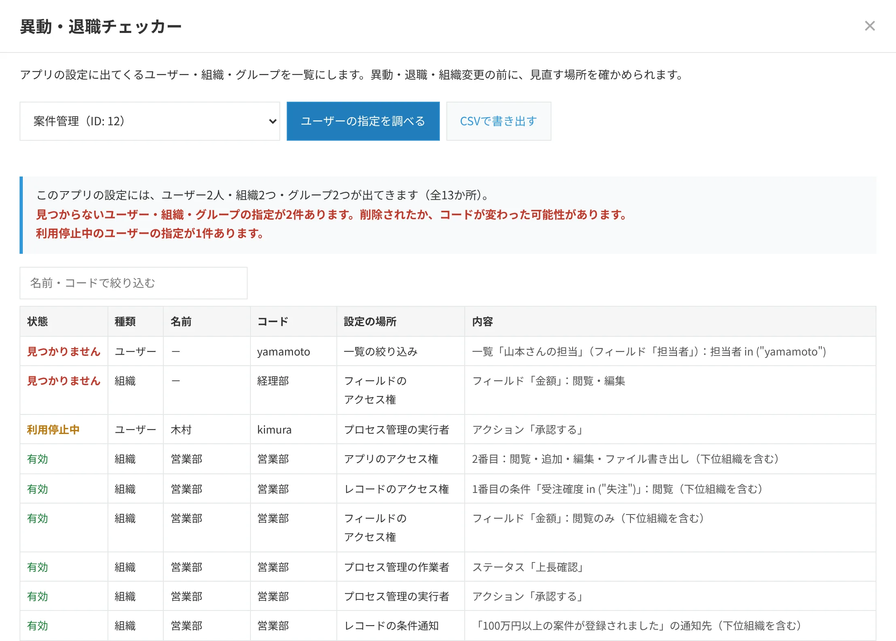

kintoneで、退職者や異動者が設定されているアプリを探す方法
2026年11月5日
退職者が出るたびに、関係しそうなアプリの設定画面を1つずつ開いて確かめている。それでも見落としがある。
kintoneの管理者から、よく聞く悩みです。
このページでは、ユーザー・組織・グループが設定されうる場所と、その調べ方をまとめます。
ユーザー・組織・グループが設定される場所
アクセス権だけではありません。1つのアプリの中でも、次のように多くの画面に分かれています。
| 設定 | ユーザー・組織・グループが入る場所 |
|---|---|
| アクセス権 | アプリ・レコード・フィールドのアクセス権の対象。レコードのアクセス権の条件（例：担当者が○○さん） |
| プロセス管理 | ステータスごとの作業者、アクションを実行できる人、アクションの条件 |
| 通知 | アプリの条件通知・レコードの条件通知・リマインダーの条件通知の通知先と条件 |
| フォーム | ユーザー選択・組織選択・グループ選択フィールドの初期値と、選べる候補 |
| 一覧・グラフ | 絞り込みの条件（例：「山本さんの担当」という一覧） |
| アクション | アクションを使えるユーザー |
このほか、プラグインの設定や、JavaScriptのカスタマイズの中にユーザーのコードが書かれていることもあります。
退職や組織変更のあとに、設定が残ることがある
ユーザーを削除したり、組織やグループを整理したりしても、アプリの設定から自動できれいに消えるとは限りません。
削除したグループがアクセス権に残っていないか確かめ、手で消す作業が必要になる場合があります。一覧の絞り込みにグループを使っていると、グループを消したあとにエラーになることもあります。
プロセス管理の作業者が退職者のままだと、申請が止まってしまいます。
アプリ管理の権限を持つのが1人だけだと、その人の異動や退職のあと、kintoneのシステム管理者しか設定を変えられなくなります。
そのため、異動や退職の前に、その人がどこに設定されているかを確かめておくのが安全です。
標準の画面で調べる手順
- kintoneシステム管理の「アプリ管理」で、アプリの一覧を確かめます。
- アプリを1つずつ開き、「アプリの設定」の「アクセス権」（アプリ・レコード・フィールドの3つ）、「プロセス管理」、「通知」（3種類）、「一覧」「グラフ」「アクション」を順に開いて、対象の人・組織・グループを探します。
- 「フォーム」で、ユーザー選択などのフィールドの初期値と、選べる候補も確かめます。
- 見つかった場所を表に書き留め、異動や退職の日までに直します。
1つのアプリで10か所近くの画面を開くことになるため、アプリが多いほど時間がかかり、見落としも起きやすくなります。
REST APIで調べる
上の設定は、すべてkintoneのREST APIで取得できます（そのアプリの管理権限が必要です）。
- アクセス権：
/k/v1/app/acl.json・/k/v1/record/acl.json・/k/v1/field/acl.json - プロセス管理：
/k/v1/app/status.json - 通知：
/k/v1/app/notifications/general.json・perRecord.json・reminder.json - フォーム・一覧・グラフ・アクション：
/k/v1/app/form/fields.json・/k/v1/app/views.json・/k/v1/app/reports.json・/k/v1/app/actions.json
取得した設定から、ユーザー・組織・グループのコードを取り出します。
条件の文字列（例：担当者 in ("yamamoto")）の中にもコードが入るので、忘れずに調べます。
取り出したコードが、いまもあるかは、cybozu.comのUser API（/v1/users.json・/v1/organizations.json・/v1/groups.json）で確かめられます。
ユーザーの valid が false なら、利用停止中です。
プラグインで調べる
台帳屋の異動・退職チェッカー（無料）は、上のAPIを使って、選んだアプリの設定に出てくるユーザー・組織・グループを一覧にするプラグインです。
いまのcybozu.comと照らし合わせ、見つからない指定や利用停止中のユーザーの指定を先頭に並べます。名前で絞り込めば、異動する人が出てくる場所だけを確かめられます。


すべてのアプリをまとめて調べる場合は、有料版の棚卸し・変更監視パックで、全アプリの結果をExcelの点検台帳にできます。
残さないための設定の考え方
- アクセス権や通知、プロセス管理の作業者は、できるだけ個人ではなく組織やグループで指定します。異動のときは、組織やグループのメンバーを入れ替えるだけで済みます。
- アプリ管理の権限は、2人以上か、グループに付けておきます。
- 年度末や人事異動の時期に、定期的に点検します。点検の記録を残しておくと、次の担当者に引き継げます。